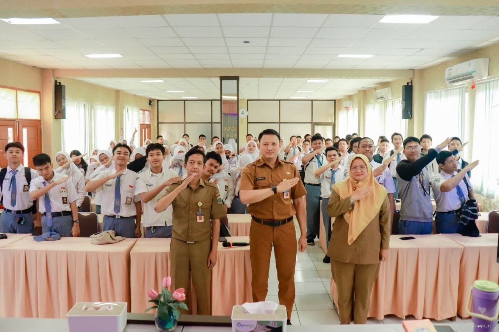

|
Website GiselyMe.
|
|
| Beranda | Tentang Saya | Sekolahku | Syair Lagu | |
Sosialisasi TKA 2026Senin, 21 September 2026 SMKN 1 Tangerang sukses menjadi tuan rumah Pertemuan Kepala SMK dan Sosialisasi Tes Kemampuan Akademik (TKA) Tahun 2026 pada Senin (21/9/2026). Agenda ini dihadiri oleh jajaran Kepala SMK dari wilayah Kota Tangerang dan Kota Tangerang Selatan (Tangsel). Pertemuan strategis ini digelar untuk menyamakan persepsi serta mematangkan kesiapan teknis pelaksanaan TKA 2026. Melalui tes ini, capaian kompetensi dasar akademik siswa SMK di kedua wilayah tersebut akan diukur secara terstandar.  |
Tautan eksternal |
| © Quinsha Giselyi, 2026. | |